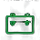
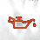
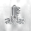
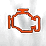
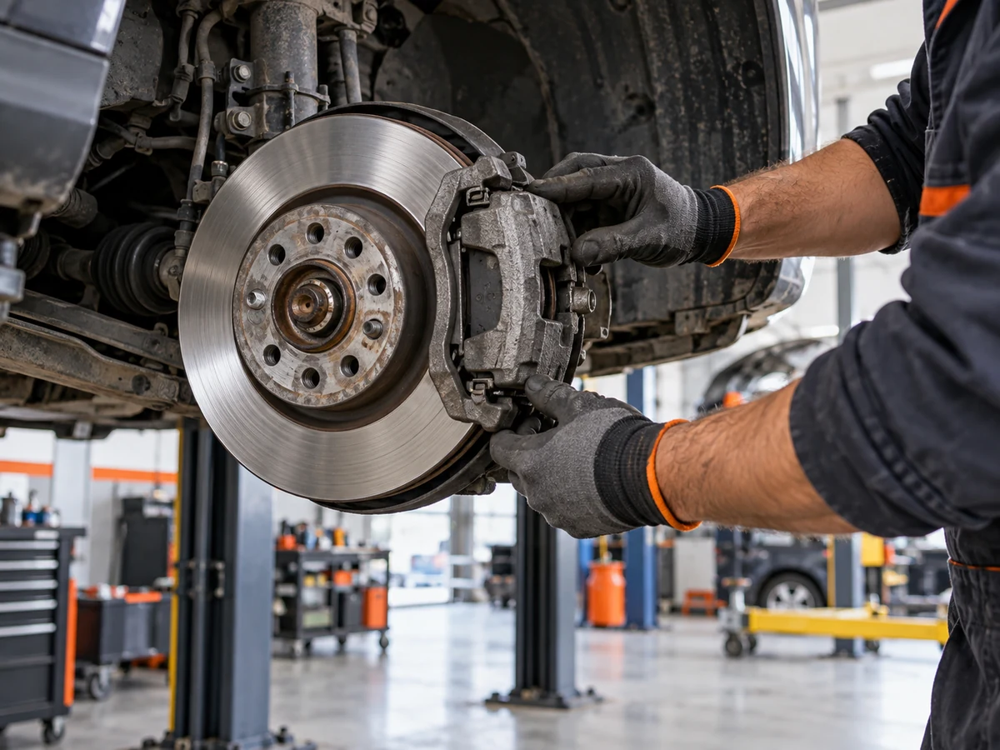
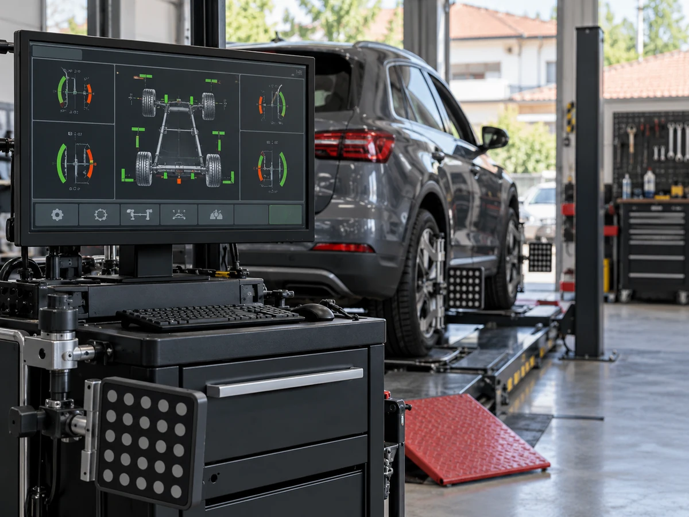

Jasan servis.
Bez nagađanja.
Dijagnostika, redovno održavanje i popravke za vozače iz Beograda.
Dodatne radove prvo odobravate.




Šta vaš automobil pokušava da kaže?
Ovo su najčešći znaci da je vreme za dijagnostiku. Ako primećujete neki od njih, najbolje je da se vozilo pregleda pre većeg kvara.
Sve što je potrebno da se vratite na put
Od dijagnostike do redovnog održavanja, na jednom mestu.

Od prijave do preuzimanja vozila
Jasan proces, bez prećutnih radova.
- 01
Prijava
Pošaljite podatke o vozilu i opišite problem.
- 02
Dijagnostika
Pregledamo vozilo i objašnjavamo nalaz.
- 03
Dogovor i servis
Odobravate dodatne radove, zatim sprovodimo servis.
Preuzimanje
Vozilo preuzimate spremno za put.
Oprema koja pokazuje problem, pre nego što menjamo deo
Koristimo savremenu dijagnostičku i mernu opremu kako bismo precizno utvrdili uzrok kvara i predložili odgovarajuće rešenje.

Pre dodatnog zahvata objašnjavamo šta je potrebno i tražimo vašu saglasnost.
Zakažite pregled vozila
Popunite kratku formu i izabraćemo termin koji vam odgovara.
Česta pitanja
Odgovori na najvažnija pitanja naših klijenata.
Kako mogu da zakažem servis?
Pošaljite kratak zahtev kroz formu ili pozovite servis. Termin potvrđujemo nakon provere vrste usluge i raspoloživosti.
Da li prvo moram da dođem na dijagnostiku?
Kada uzrok nije jasan, prvo pregledamo vozilo i zatim predlažemo potrebne radove.
Da li odobravam dodatne radove?
Da. Pre dodatnog zahvata objašnjavamo šta je potrebno i tražimo vaše odobrenje.
Koliko traje servis?
Trajanje zavisi od pregleda, dostupnosti delova i obima radova. Procenu dobijate nakon dijagnostike.
Da li mogu da sačekam vozilo?
Mogućnost čekanja zavisi od vrste usluge i trajanja. Pitajte prilikom potvrde termina.
Kako da znam šta je tačno urađeno?
Prilikom preuzimanja dobijate pregled izvršenih radova i dogovorene informacije o ugrađenim delovima.